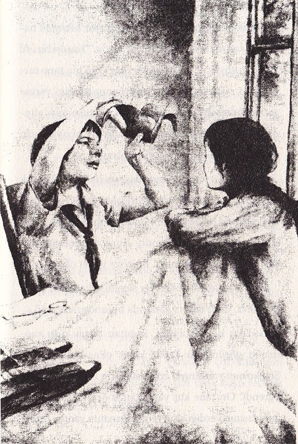
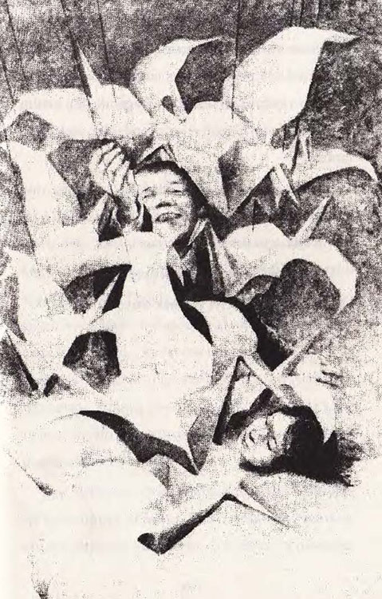

Sadako, ertesi sabah yavaş yavaş uyandı. Bir an annesi kahvaltı sofrasını hazırlarken çıkan sesleri duyar gibi oldu. Ancak hastanede duyduğu sesler yeni ve değişikti. Sadako, iç çekti ve bir önceki günün kötü bir rüya olduğunu umdu. Ne var ki Hemşire Yasunaga iğne yapmaya geldiğinde, gerçekle karşı karşıya olduğunu anlamıştı artık.
Tombul hemşire neşeli bir sesle, “İğne olmak hastanenin kurallarından biridir. Buna zamanla alışacaksın,” dedi.
“Ben sadece bu iğnelerle iyileşmeyi istiyorum,” dedi Sadako. Sesi, üzgün ve mutsuz çıkıyordu. Ardından da “ki eve gidebileyim,” diye ekledi.
O gün öğleden sonra odasına gelen Şizuko, Sadako’nun ilk ziyaretçisi oldu. Arkasında bir şey saklıyor ve gizemli bir şekilde gülümsüyordu. Sadako’ya, “Gözlerini kapat,” dedi. Sadako gözlerini sıkıca kapattığında, Şizuko yatağın üstüne birkaç kâğıtla bir makas koyarak, “Şimdi bakabilirsin!” dedi.
Sadako gözlerini açıp da kâğıtlarla makası yatağının üstünde görünce, “Bunlar da ne böyle?” diye sordu merakla.
Şizuko memnun görünüyordu. “İyileşmen için böyle bir şey düşündüm,” dedi gururla. Sonra, “Bak şimdi!” diyerek kâğıttan kare şeklinde büyük bir parça kesti ve kâğıdı birçok kez çabucak katlayarak güzel bir turna kuşu yapıverdi.
Sadako şaşırmıştı. “İyi, güzel de, bu kâğıttan kuş beni nasıl iyileştirebilir?” diye sormadan edemedi.

Şizuko, “Turna kuşuyla ilgili şu eski hikâyeyi hatırlamıyor musun yoksa?” diye sordu. “Kuşun bin yıl yaşadığı söylenir. Ve hasta biri kâğıttan bin tane turna kuşu yaparsa, tanrılar bu insanın isteğini yerine getirip onu sağlığına kavuşturur.” Konuşurken, elinde tuttuğu kâğıttan turna kuşunu Sadako’ya verip ekledi. “Bu da senin ilk kuşun olsun.”
Sadako, Şizuko’nun ince davranışından ötürü çok duygulanmış, gözleri yaşlarla dolmuştu. Oysa arkadaşı aslında böyle şeylere inanmazdı. Sadako, kuşu aldı ve bir dilekte bulundu. Kuşa dokunduğunda, garip bir hisse kapılmıştı. Bu iyiye işaret olmalıydı.
Alçak sesle, “Teşekkürler sevgili arkadaşım Şizuko,” dedi, “onu daima yanımda bulunduracağım.”
Sadako işe koyulunca, kâğıttan turna kuşu yapmanın göründüğü kadar kolay olmadığını anladı. Şizuko’nun yardımıyla zor kısımların nasıl yapıldığını öğrendi. On tane kuş yaptıktan sonra, onları sırayla arkadaşının verdiği altın renkli turnanın yanına dizdi.
Hepsini aynı boyutta yapamamıştı ama bu, bir başlangıçtı.
“Daha dokuz yüz doksan tane yapmam gerekiyor,” dedi Sadako. Altın renkli turna yanındayken, kendisini güvende ve şanslı hissediyordu. Nasıl olsa birkaç hafta içinde bin adedi tamamlayabilirdi. Sonra da eve gidecek kadar güçlü olacaktı.
O akşam Masahiro, Sadako’ya okul ödevlerini getirdi ve kuşları görünce, “Bu küçük masaya daha fazla kuş sığmaz. Ben en iyisi onları tavana asayım,” dedi.
Sadako gülümsüyordu. “Yaptığım her kuşu tavana asacağına söz veriyor musun?” diye sordu kardeşine.
Masahiro söz verdi.
“Çok iyi,” dedi Sadako, yaramaz çocuklar gibi gözlerini kırpıştırarak. “Yani bin tane kuşu tek tek tavana asacaksın, öyle mi?”
“Bin tane mi?” Masahiro, kuşların sayısını duyunca çok şaşırmıştı. “Şaka yapıyor olmalısın.” Sadako, bunun üzerine turnaların hikâyesini anlattı.
Masahiro hikâyeyi dinledikten sonra kız kardeşinin saçını okşadı ve sırıtarak, “Demek beni kandırdın!” dedi. “Olsun, kaç tane yaparsan yap, hepsini tavana asacağım.” Hemşire Yasunaga’dan biraz iple ufak çiviler ödünç aldı ve kardeşinin yapmış olduğu ilk on turnayı tavana astı. Altın renkli turna ise masanın şeref köşesinde kalmıştı.
Akşam yemeğinden sonra Bayan Sasaki, Mitsue ile Eiji’yi hastaneye götürdü. Kâğıttan turna kuşlarını gören herkes şaşırıyordu. Kuşlar, Bayan Sasaki’ye ünlü bir şiiri hatırlattı:
“Rengârenk kâğıtlardan, turnalar,
Uçarak evimize geliyorlar.”

Mitsue ve Eiji altın sarısı turnayı; Bayan Sasaki de üstünde pembe güneş şemsiyeleri olan yeşil kâğıttan yapılmış en ufak kuşu beğendi. “Bu benim seçimim,” dedi. “Çünkü en zor yapılanlar, ufak olanlardır.”
Ziyaret saati sona erince Sadako, odasında yine yalnız kalmıştı. O kadar yalnızdı ki, cesaretini kaybetmemek için daha çok kuş yaptı.
On bir... daha iyi yapmak istiyorum.
On iki... daha da iyi yapmak istiyorum...